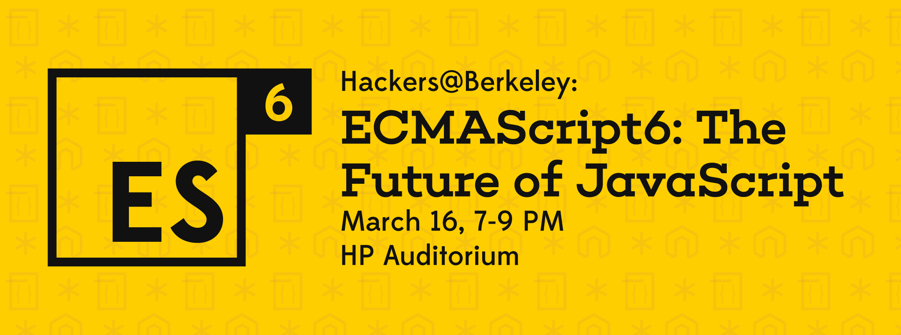

These illustrations were made for my (failed) illustration a day experiment. Although I never committed to it, I got to play around with a lot of different styles and even got a feature from Sennheiser.
As of late, I have also been working with the Hackers@Berkeley media team to create banners and other visual assets.
